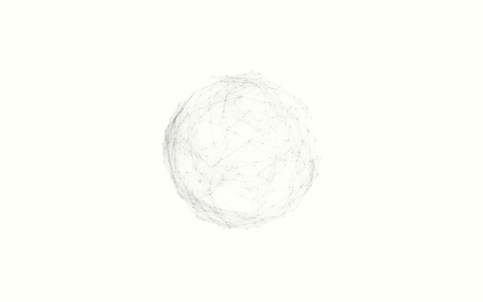
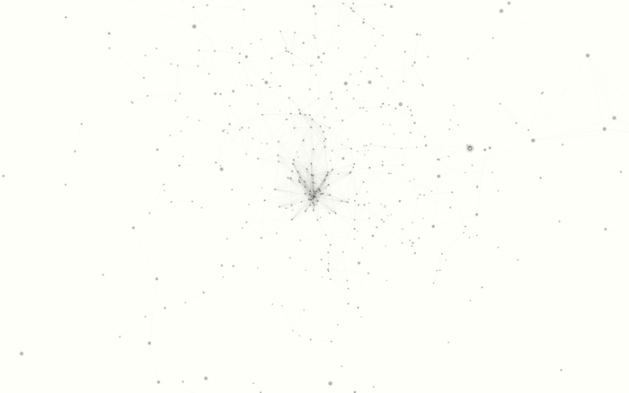
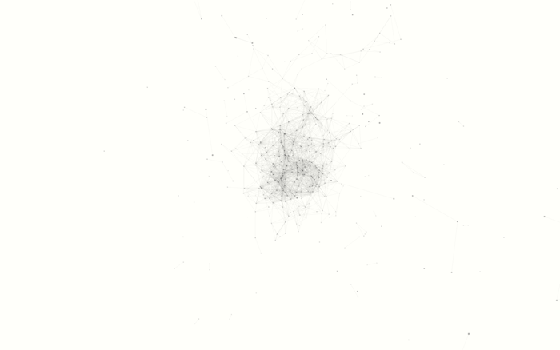

Chaos Theory
(Student Work)
It is an attempt to visualise music in two ways: the first using equations of dynamical systems which exhibit chaotic flow, such as the Lorenz attractor, mapped to the surface of a sphere, and the second using swarm dynamics. Through the process of beat detection and amplitude measurement, the behaviour of these two phenomenon is altered. The visualisation is rendered live and is purely generative.
This code was inspired by the work of flight404, Reza Ali and this wonderful tutorial explaining the concepts of flocking and swarms.
Music: James Blake - Unluck
Made with Processing.



